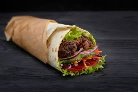

Kebab

A kebab is a diverse dish of seasoned meat—traditionally lamb, but also beef, chicken, or fish—that is grilled, roasted, or stewed, often on skewers over an open flame.
Ingredients :
- Tortilla wraps
- Sliced beef
- Lettuce (choped)
- Tomato (sliced)
- Cucumber (optional)
- Mayonnaise
- Sauce
Steps :
- Coot the meat
- Prepare veggies
- Warm the tortilla
- Assemble
- Wrap it
Go Back